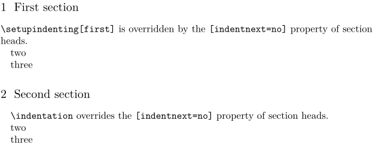

Contents
Summary
The command
\indentation
forces indentation of a paragraph
Description
Force indentation on one paragraph. (Not to be confused with the deprecated command
\indenting
, which was the predecessor of
\setupindenting
).
Besides when indentation is not 100% enforced due to \setupindenting settings, this command is also relevant if the indentnext=yes is used in \setupheads, \setupitemgroup, etc.
Examples
Example 1
-
\setupindenting[yes, 1em, first] \section{First section} \type{\setupindenting[first]} is overridden by the \type{[indentnext=no]} property of section heads. \par two\par three\par \section{Second section} \indentation \type{\indentation} overrides the \type{[indentnext=no]} property of section heads. \par two\par three\par
- 
Notes
See also
- spac-hor.mkiv
- \setupindenting
- \noindentation to explicitly disable indenting of a paragraph.